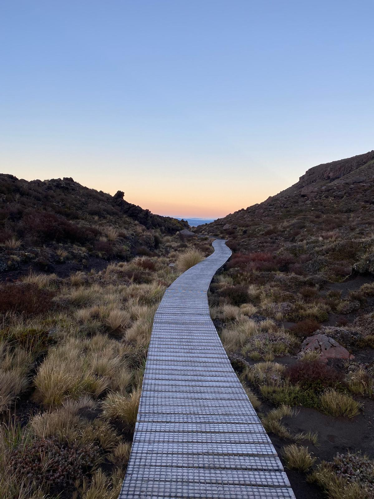
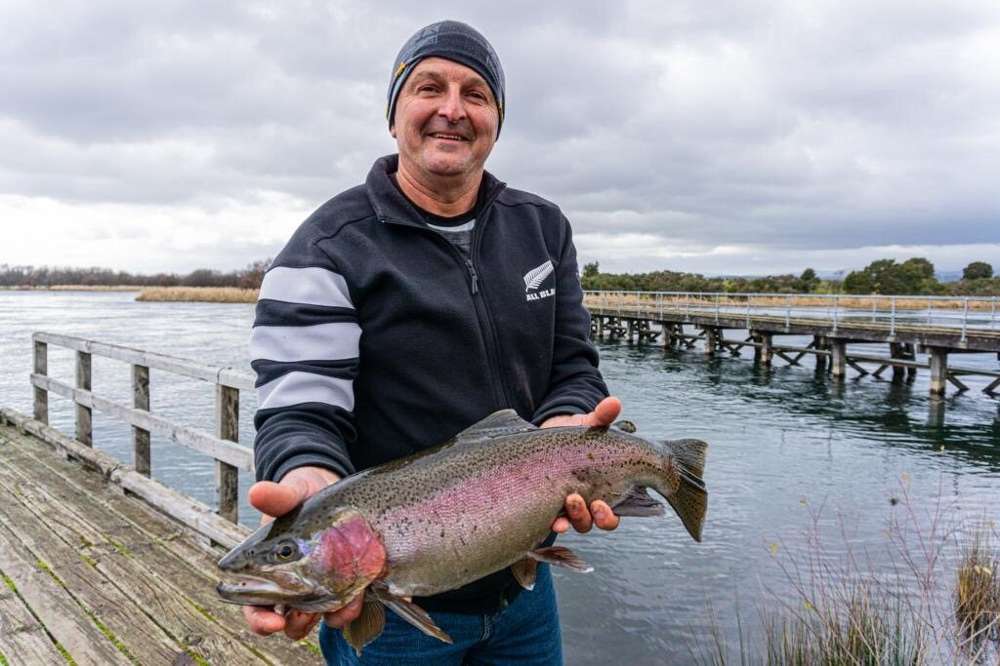
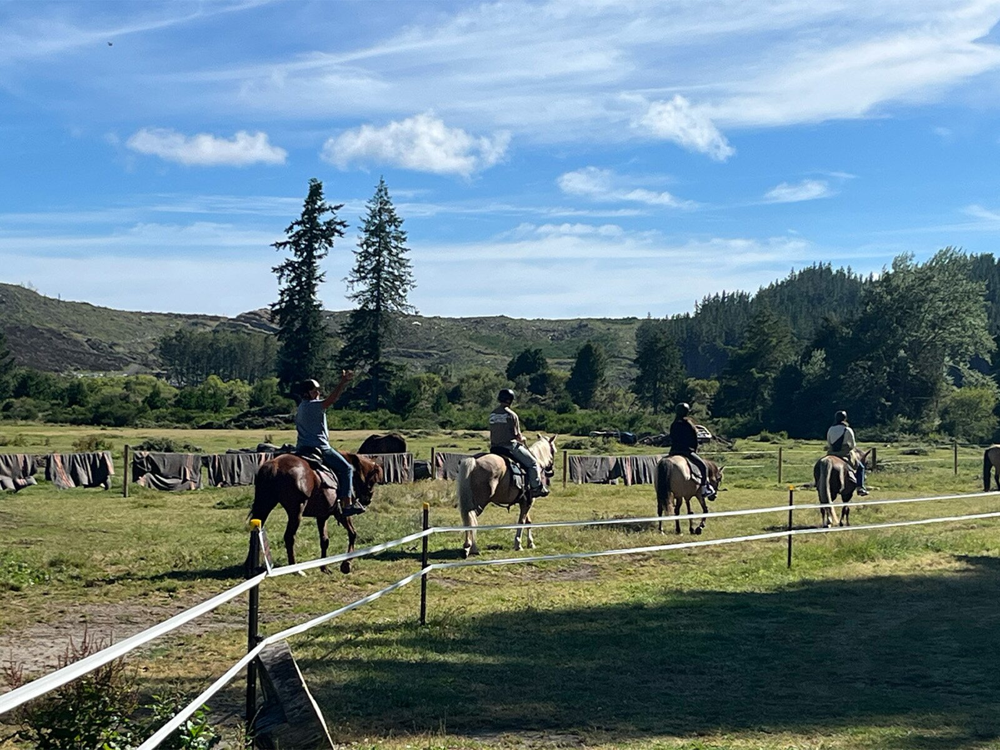
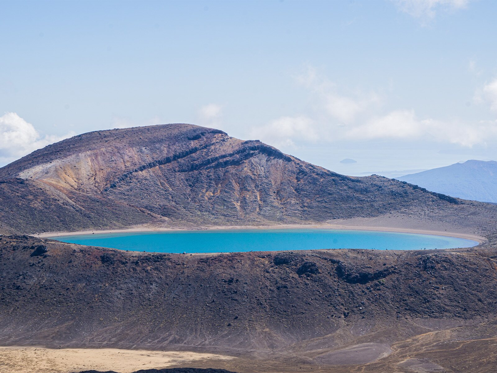
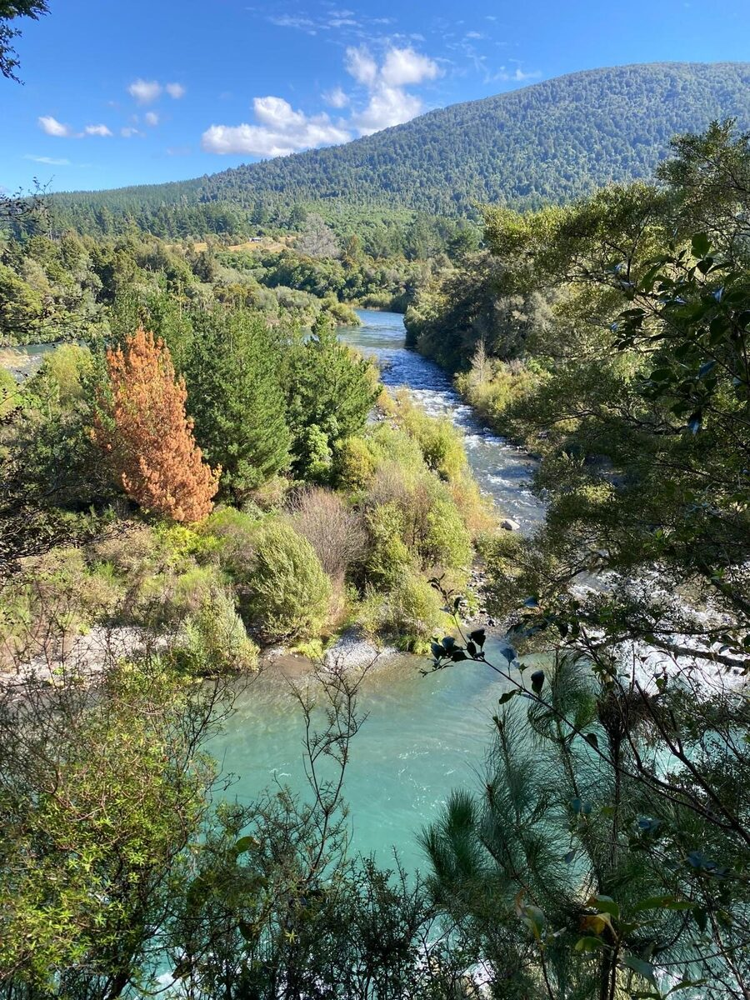

Clear Head Retreat
A private men's retreat · Turangi, New Zealand
Time out in Turangi to slow down and think straight. Get outside, eat well, and give yourself room to work things out.

What this is
A small retreat. Not a programme, not a course.
Clear Head Retreat is a private stay at a quiet home in Turangi.
Time outside, decent food, and room to think. Someone runs it and it has a shape, but it isn't therapy and it isn't counselling. It's the sort of break most men keep putting off.
No two retreats run the same. We set the dates, the length and the pace around whoever is coming.
Honest about fit
Who it's for, and who it isn't.
This is for you if you…
- Feel mentally overloaded or close to burnt out
- Want quiet space to actually think
- Value your privacy
- Like being outdoors
- Want direction, without sitting in a therapy room
- Just want a few days in the hills with good mates
- Simply need to reset
It isn't the right place if you…
- Are in an acute mental health crisis
- Are looking for therapy or counselling
- Aren't comfortable with quiet reflection or honest conversation
If you're in crisis, please reach out to a GP or, in New Zealand, call or text 1737 any time to talk with a trained counsellor.

Who's behind it
Meet Wade.
Clear Head Retreat is hosted by Wade, [EDIT: age], originally from [EDIT: heritage and where he grew up]. He has lived and worked in [EDIT: countries and cities] before settling near Turangi, and spent most of his working life self-employed and on the tools.
Years of physical work took a toll, on his body and on his head. Clear Head Retreat came out of the point where something had to give. It's the break he needed and couldn't find anywhere.
He isn't a therapist and doesn't pretend to be. He's someone who has been through it, knows this part of the country properly, and is good company on a riverbank.
Behind the scenes, Celeste [EDIT: Celeste's role, e.g. "looks after the house, the food and the bookings"]. Between them, the place runs the way it should.
Every photo on this website was taken by us, here. Nothing on this site is stock.
Getting outside
Plenty to do. None of it compulsory.
There's no set schedule. These are things you can do, not things you have to do. Some men are out from morning till dark, others are happy with a coffee and a book. It's your call, and the weather gets a say too.

Walks
Forest and river tracks at an easy pace, with good views along the way.

Fishing
The Tongariro is world famous trout water. No experience needed, we sort the rest.

Golf
A relaxed round at the local course when the weather plays along.
Mountain biking
Trails for every level, from cruisy to proper fun.

Horse riding
An easy way to get out and see the area.

Tongariro adventures
The alpine crossing and the mountains up close, when conditions are right.
White water rafting
Cold water and a lot of laughing, on the rivers nearby.
Whakapapa ski field
Snow on the mountain in season, a short drive from the door.
Thermal pools
Warm natural water to soak in and let the day slow right down.

Doing nothing at all
A book, a coffee and a spot by the river. A perfectly good use of a day.
Some of these depend on the weather and the season, and safety comes first. If there's something else you'd like to do, just ask.
Enough quiet to hear yourself think again.

Kept small on purpose
Small enough to be honest.
Most retreats fill a room and call it connection. We'd rather keep it small, so nobody sits at the back and nobody gets managed like a delegate.
You're not a name on a list here. That only works with a few of you, so the house takes up to four guests and no more.
Come on your own and we'll place you with an open retreat. Or bring your mates and have the house to yourselves, whether that's friends, workmates, brothers, or a father and his sons.
It doesn't have to be heavy, either. If four of you just want a few days in the hills, a fire, a feed and a fish, that's reason enough to come. We still put the days together, and we're still here.
- Trust builds quickly when it's this personal
- The house stays quiet and easy
- The friendships tend to outlast the stay
By invitation
There's no booking button, and that's on purpose.
Every retreat is arranged personally. You send a short enquiry, we ring you to check the fit, and the dates, the shape of it and the pricing get worked out from there.